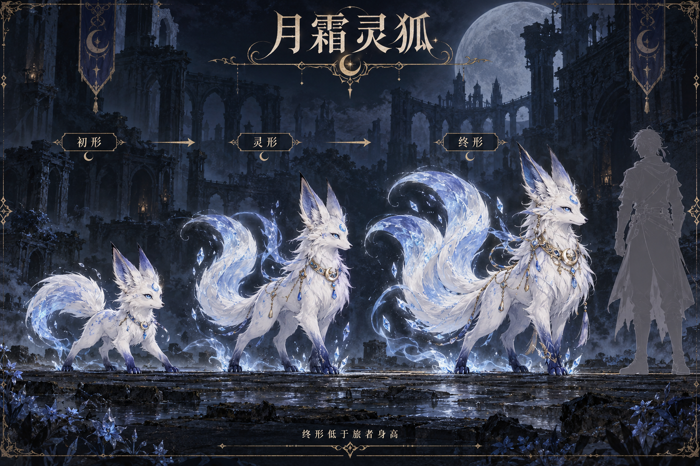
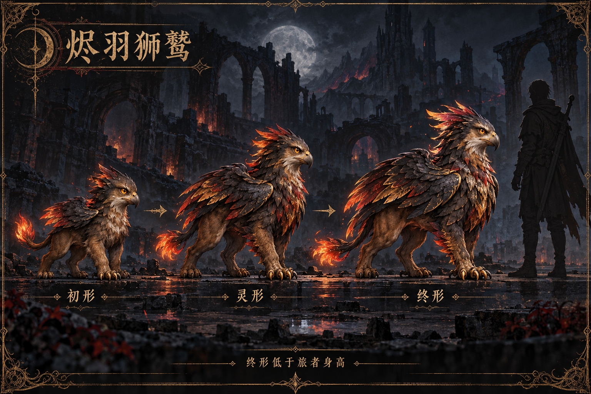
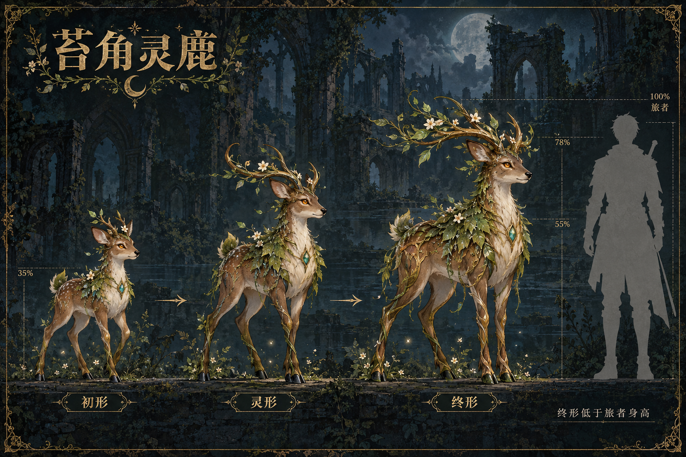
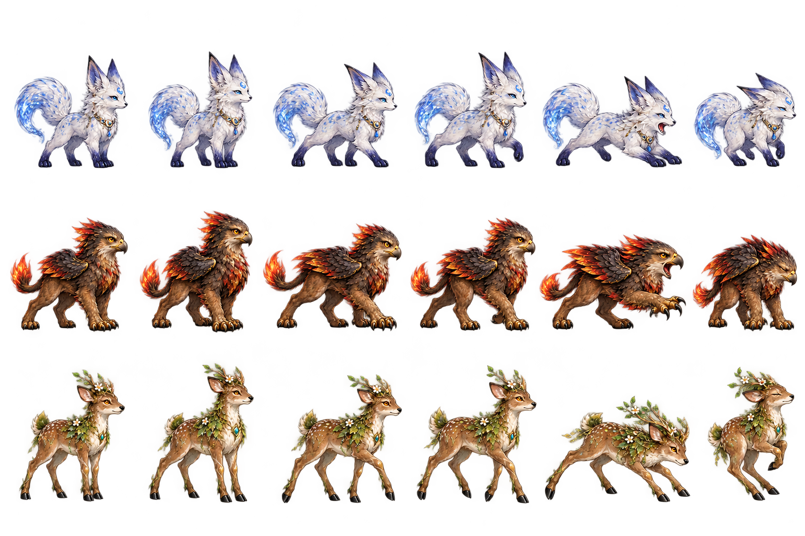
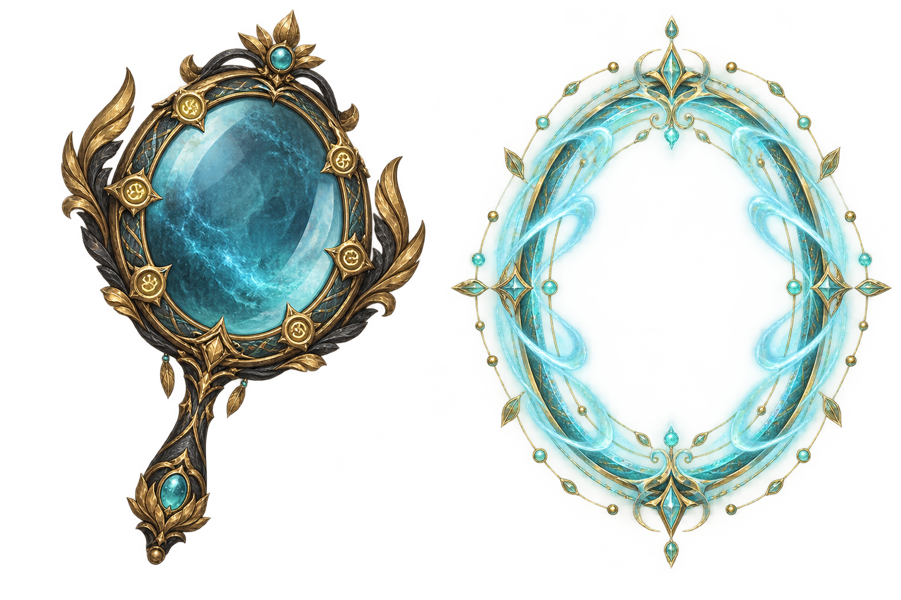

月霜灵狐
副本对应：第9关 · 三阶段体型约人物35% / 55% / 75%。外观待用户验收。

三只灵宠各有初形、灵形、终形。人形参照与灵宠站在同一基线，终形的耳、翼、角与尾部轮廓均低于旅者。
当前副本捕捉形态为初形；灵形和终形为后续进化外观参考，尚未实现进化/出战养成。
副本对应：第9关 · 三阶段体型约人物35% / 55% / 75%。外观待用户验收。

副本对应：第7关 · 三阶段体型约人物40% / 60% / 78%。外观待用户验收。

副本对应：第5关 · 三阶段体型约人物35% / 55% / 78%。外观待用户验收。

每行一种灵宠，依次为待机A、待机B、行走A、行走B、攻击、受击。透明原图使用逐帧显式源区域，不能按理想等分格推算。

古铜黑金与蓝玉镜面，捕捉环为独立特效素材。
